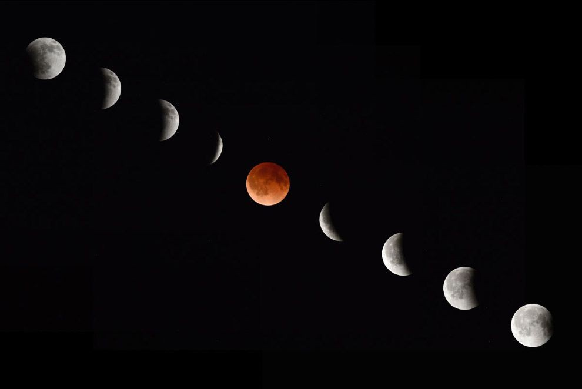

Первое из трех суперлуний в 2019 году — когда полная луна находится ближе всего к Земле на своей эллиптической орбите и, следовательно, оказывается максимально большой для наблюдателя — произойдет в январе и совпадет с полным лунным затмением в некоторых частях мира, окрашивая наш спутник в темно-красный цвет, когда он будет проходить позади тени, отбрасываемой Землей. Затмение будет видно по всей Северной и Южной Америке, а также в самых крайних западных частях Европы и Африки. Второе суперлуние этого года состоится 19 февраля, а третье — 21 марта.